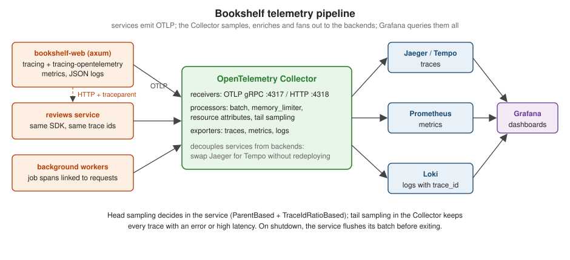

OpenTelemetry & Distributed Tracing
|
This content was generated with the assistance of AI and should be verified against the official documentation before being relied on in production. |
This page is written against opentelemetry, opentelemetry_sdk, opentelemetry-otlp, opentelemetry-http and
opentelemetry-semantic-conventions 0.33.0 with tracing-opentelemetry 0.34.0, axum 0.8.9 and tower-http 0.7.1 on Rust
1.99 (edition 2024), checked on 2026-10-06. Logging & Tracing showed how
Bookshelf records spans and events with the tracing crate inside one process. A page view, though, crosses
bookshelf-web, the reviews service, the database and a background worker. OpenTelemetry turns those tracing spans
into one distributed trace: every service exports its spans with the same trace id to a Collector, and a backend
such as Jaeger or Grafana Tempo shows the whole request as one waterfall.
The pipeline

-
Instrument with
tracing, export with OpenTelemetry. Application code keeps usingtracingspans,#[instrument]andTraceLayer; thetracing-opentelemetrylayer converts each span into an OpenTelemetry span. Nothing in the handlers depends on the exporter. -
Send OTLP to a Collector, not to the backend. The service only knows
localhost:4317(a sidecar or a node agent). The Collector batches, retries, drops personal data, applies tail sampling and fans out to the backends, which can then change without redeploying the services. -
One trace id across services. The W3C
traceparentheader carries the trace id and the caller’s span id across every HTTP hop.
The three pillars
Observability material, including Gangappa & Rangaraj (chapter 1), describes telemetry as three pillars. Each
answers a different question, and OpenTelemetry defines all three with one resource model (service.name,
service.version, …) and one context, so they can be joined:
| Signal | Answers | In Bookshelf | Cost profile |
|---|---|---|---|
Traces |
Where did the time go in this request, across services? |
|
per request; sampled |
Metrics |
How often, how fast, how full — for all requests? |
|
fixed per series, independent of traffic; never sampled |
Logs |
What exactly happened, with which values? |
|
per event; filtered by level |
The pillars are only useful together: an SLO alert fires on a metric, an exemplar or a time range leads to the
slow traces, and the trace id leads to the logs of exactly those requests. That last hop works because log lines
carry the trace_id and span_id of the span they were written in — the span context described below.
Tracer provider, exporter and the tracing bridge
The example below is a complete service: it installs the tracer provider and the tracing layer, extracts the incoming
trace context in TraceLayer, injects it into an outgoing reqwest call, and flushes the remaining spans on shutdown.
/reviews/{isbn} stands in for the separate reviews service so the propagation can be seen in one process:
use std::time::Duration;
use axum::{
Router,
extract::{MatchedPath, Path, Request, State},
http::{HeaderMap, Response},
routing::get,
};
use opentelemetry::{KeyValue, global, trace::{TraceContextExt, TracerProvider as _}};
use opentelemetry_http::{HeaderExtractor, HeaderInjector};
use opentelemetry_otlp::{SpanExporter, WithExportConfig};
use opentelemetry_sdk::{
Resource,
propagation::TraceContextPropagator,
trace::{Sampler, SdkTracerProvider},
};
use opentelemetry_semantic_conventions::resource::{DEPLOYMENT_ENVIRONMENT_NAME, SERVICE_VERSION};
use tower_http::trace::TraceLayer;
use tracing::{Span, field::Empty, info, instrument};
use tracing_opentelemetry::OpenTelemetrySpanExt;
use tracing_subscriber::{EnvFilter, layer::SubscriberExt, util::SubscriberInitExt};
fn init_telemetry() -> SdkTracerProvider {
// OTLP over gRPC; the endpoint comes from OTEL_EXPORTER_OTLP_ENDPOINT, default http://localhost:4317
let exporter = SpanExporter::builder()
.with_tonic()
.with_timeout(Duration::from_secs(3))
.build()
.expect("OTLP exporter");
let provider = SdkTracerProvider::builder()
.with_batch_exporter(exporter)
// head sampling: follow the caller's decision, sample 10 % of new traces
.with_sampler(Sampler::ParentBased(Box::new(Sampler::TraceIdRatioBased(0.1))))
.with_resource(
Resource::builder()
.with_service_name("bookshelf-web")
.with_attributes([
KeyValue::new(SERVICE_VERSION, env!("CARGO_PKG_VERSION")),
KeyValue::new(DEPLOYMENT_ENVIRONMENT_NAME, "staging"),
])
.build(),
)
.build();
// W3C trace-context (traceparent / tracestate) for extract and inject
global::set_text_map_propagator(TraceContextPropagator::new());
global::set_tracer_provider(provider.clone());
tracing_subscriber::registry()
.with(EnvFilter::try_from_default_env().unwrap_or_else(|_| "info,tower_http=warn".into()))
.with(tracing_subscriber::fmt::layer())
.with(tracing_opentelemetry::layer().with_tracer(provider.tracer("bookshelf-web")))
.init();
provider
}
/// One server span per request, named after the route and parented on the incoming traceparent.
fn make_span(req: &Request) -> Span {
let route = req.extensions().get::<MatchedPath>().map_or("unmatched", MatchedPath::as_str);
let span = tracing::info_span!(
"request",
otel.name = format!("{} {route}", req.method()),
otel.kind = "server",
http.request.method = %req.method(),
http.route = route,
http.response.status_code = Empty,
otel.status_code = Empty,
);
let parent = global::get_text_map_propagator(|p| p.extract(&HeaderExtractor(req.headers())));
if let Err(err) = span.set_parent(parent) {
tracing::warn!(%err, "could not set the remote parent");
}
span
}
fn record_status<B>(res: &Response<B>, _latency: Duration, span: &Span) {
span.record("http.response.status_code", res.status().as_u16());
if res.status().is_server_error() {
span.record("otel.status_code", "ERROR");
}
}
/// Outgoing calls carry the current span's context as a traceparent header.
fn inject_trace_context(headers: &mut HeaderMap) {
let cx = Span::current().context();
global::get_text_map_propagator(|p| p.inject_context(&cx, &mut HeaderInjector(headers)));
}
#[instrument(skip(client), fields(otel.kind = "client"))]
async fn fetch_reviews(client: &reqwest::Client, isbn: &str) -> reqwest::Result<String> {
let mut headers = HeaderMap::new();
inject_trace_context(&mut headers);
client.get(format!("http://127.0.0.1:3000/reviews/{isbn}")).headers(headers).send().await?.text().await
}
async fn book(State(client): State<reqwest::Client>, Path(isbn): Path<String>) -> String {
let trace_id = Span::current().context().span().span_context().trace_id();
info!(%trace_id, "rendering book page");
let reviews = fetch_reviews(&client, &isbn).await.unwrap_or_default();
format!("book {isbn}, {reviews}")
}
// stands in for the separate reviews service
async fn reviews(Path(isbn): Path<String>, headers: HeaderMap) -> String {
let trace_id = Span::current().context().span().span_context().trace_id();
let traceparent = headers.get("traceparent").and_then(|v| v.to_str().ok()).unwrap_or("-");
info!(%trace_id, traceparent, "reviews for {isbn}");
"2 reviews\n".into()
}
#[tokio::main]
async fn main() {
let provider = init_telemetry();
let app = Router::new()
.route("/books/{isbn}", get(book))
.route("/reviews/{isbn}", get(reviews))
.layer(TraceLayer::new_for_http().make_span_with(make_span).on_response(record_status))
.with_state(reqwest::Client::new());
let listener = tokio::net::TcpListener::bind("127.0.0.1:3000").await.unwrap();
axum::serve(listener, app)
.with_graceful_shutdown(async { tokio::signal::ctrl_c().await.unwrap() })
.await
.unwrap();
// export the spans still sitting in the batch before the process exits
if let Err(err) = provider.shutdown() {
eprintln!("telemetry shutdown: {err}");
}
}Source: opentelemetry_sdk: SdkTracerProvider, opentelemetry-otlp 0.33.0, tracing-opentelemetry 0.34.0 and opentelemetry-http 0.33.0
$ curl -s -H 'traceparent: 00-4bf92f3577b34da6a3ce929d0e0e4736-00f067aa0ba902b7-01' localhost:3000/books/9781718503106
book 9781718503106, 2 reviews
# server log (the Collector was not running):
INFO request{otel.name="GET /books/{isbn}" otel.kind="server" http.request.method=GET http.route="/books/{isbn}"}:
rendering book page trace_id=4bf92f3577b34da6a3ce929d0e0e4736
INFO request{otel.name="GET /reviews/{isbn}" otel.kind="server" http.request.method=GET http.route="/reviews/{isbn}"}:
reviews for 9781718503106 trace_id=4bf92f3577b34da6a3ce929d0e0e4736
traceparent="00-4bf92f3577b34da6a3ce929d0e0e4736-189230cc4f8a3532-01"
WARN opentelemetry-otlp: name="Export.Failed.Exhausted" operation="TonicTracesClient.Export" retries=3
OTLP export exhausted retries - telemetry data will be lost-
The incoming trace id
4bf9...4736is adopted by the book handler, propagated to the reviews call, and its parent span id there (1892...3532) is the client span created byfetch_reviews. In Jaeger the three spans form one trace under the caller’s span. -
Exporter:
SpanExporter::builder().with_tonic()speaks OTLP/gRPC on port 4317;with_http()(thehttp-protofeature) speaks OTLP/HTTP on 4318. Leave the endpoint toOTEL_EXPORTER_OTLP_ENDPOINT(a value passed towith_endpointtakes precedence over the variable), andOTEL_RESOURCE_ATTRIBUTESadds resource attributes without a rebuild. Since opentelemetry-otlp 0.33, transient export failures are retried by default — theretries=3in the log above. -
Batch, not simple:
with_batch_exporterqueues spans and exports them from a background thread; the simple processor exports each span synchronously on the request path and is only for tests. -
Resource:
service.nameis what the backend groups traces by; addservice.versionanddeployment.environment.name. The constants inopentelemetry-semantic-conventionsavoid typos in attribute names. -
Span name and kind: the special
otel.name,otel.kindandotel.status_codefields set the OpenTelemetry span name, kind and status. Name server spans{method} {route}with the matched route — never the raw path, which would create one span name per book. Useserverfor incoming requests,clientfor outgoing calls,producerandconsumerfor queues, andinternal(the default) for everything else. -
Attributes: field names follow the HTTP semantic conventions (
http.request.method,http.route,http.response.status_code) so the backend’s dashboards and the Collector’s processors recognise them. Database spans usedb.system.name,db.namespaceand a sanitiseddb.query.text, never the bound values.
Propagating trace context
-
Incoming:
make_spanextracts thetraceparent/tracestateheaders with the globalTraceContextPropagatorand callsset_parenton the new span.set_parentmust run before the span is entered and returns an error when the OpenTelemetry layer is not installed; a request without the header simply starts a new trace. -
Outgoing:
inject_trace_contextwrites the current span’s context into the request headers. Call it inside the client span so the downstream service’s parent is that span. reqwest-tracing’sTracingMiddlewaredoes the same only when itsopentelemetry_0_NNfeature matches the application’s opentelemetry version, and 0.7.1 stops at 0.32 (see HTTP Clients & Proxies). -
Background work: a job enqueued by a request runs later, often in another process. Store the
traceparentwith the job, and in the worker either set it as the parent or — for batch jobs that serve many requests — add it as a link withOpenTelemetrySpanExt::add_link, so the job span points back to the requests that caused it (see Background Jobs & Tasks). -
gRPC and messaging: the same propagator injects into tonic metadata or message headers through small
Injector/Extractorimplementations. -
Only trust what you expect: at the edge of the system (the public load balancer) decide whether to honour incoming
traceparentheaders from the internet. A client that sets the sampled flag on every request bypasses head sampling.
The span context
Every OpenTelemetry span carries a SpanContext, the part of its identity that crosses process boundaries:
-
trace id (16 bytes) — shared by every span of one distributed trace;
-
span id (8 bytes) — this span; a child records it as its parent id;
-
trace flags (1 byte) — currently one bit, sampled, which tells downstream services whether the caller is recording the trace;
-
trace state — vendor-specific
key=valuepairs (thetracestateheader) that are passed along unchanged.
traceparent is these first three fields in text (00-<trace id>-<span id>-<flags>); is_remote() tells a context
extracted from a header from a local one. From a tracing span, OpenTelemetrySpanExt::context() returns the
OpenTelemetry Context, and .span().span_context() the SpanContext with trace_id(), span_id(),
trace_flags() (is_sampled()) and trace_state(). These are the values to write into log lines and error responses
for correlation.
Compensation across services
A request that changes data in several services cannot use one database transaction. The saga pattern runs the steps one after another and, when a step fails, runs compensating actions for the steps that already succeeded — releasing a reserved copy, refunding a charge. Compensations often run later or in another process (a retry queue), so they should not be hidden as ordinary children of the failed step. Give each compensation its own span and link it to the span of the step it undoes and to the span of the failure. Tracing backends show links as navigable references, so the rollback can be followed from either side even when it ends up in a different trace.
The example combines both topics: it adopts an incoming traceparent and tracestate, prints the span context, and
compensates a failed loan:
use opentelemetry::{
KeyValue,
propagation::TextMapPropagator,
trace::{SpanContext, TraceContextExt, TracerProvider as _},
};
use opentelemetry_sdk::{propagation::TraceContextPropagator, trace::SdkTracerProvider};
use tracing::{Instrument, Span, info, info_span, warn};
use tracing_opentelemetry::OpenTelemetrySpanExt;
use tracing_subscriber::{layer::SubscriberExt, util::SubscriberInitExt};
/// The OpenTelemetry identity of a `tracing` span: trace id, span id, trace flags and trace state.
fn span_context(span: &Span) -> SpanContext {
span.context().span().span_context().clone()
}
fn log_context(what: &str, span: &Span) {
let sc = span_context(span);
info!(
trace_id = %sc.trace_id(),
span_id = %sc.span_id(),
sampled = sc.is_sampled(),
trace_state = %sc.trace_state().header(),
"{what}"
);
}
#[derive(Debug)]
struct StepFailed(&'static str);
// each step stands for a call to another service
async fn reserve_copy(_isbn: &str) -> Result<(), StepFailed> {
Ok(())
}
async fn charge_deposit(_member_id: i64) -> Result<(), StepFailed> {
Err(StepFailed("card declined"))
}
async fn release_copy(_isbn: &str) {}
/// A two-step saga: reserve a copy, then charge a deposit. If the charge fails, the reservation
/// is compensated, in a span of its own that links to the step it undoes and to the failure.
async fn lend(isbn: &str, member_id: i64) -> Result<(), StepFailed> {
let reserve = info_span!("saga.step", otel.name = "reserve_copy", otel.kind = "client");
reserve_copy(isbn).instrument(reserve.clone()).await?;
let charge = info_span!("saga.step", otel.name = "charge_deposit", otel.kind = "client");
if let Err(err) = charge_deposit(member_id).instrument(charge.clone()).await {
let undo = info_span!("saga.compensation", otel.name = "compensate release_copy");
undo.add_link_with_attributes(span_context(&reserve), vec![KeyValue::new("saga.link", "undoes")]);
undo.add_link_with_attributes(span_context(&charge), vec![KeyValue::new("saga.link", "caused_by")]);
log_context("compensating", &undo);
release_copy(isbn).instrument(undo).await;
warn!(error = err.0, "loan saga rolled back");
return Err(err);
}
Ok(())
}
#[tokio::main]
async fn main() {
// no exporter: enough to create real span contexts (add `with_batch_exporter` in a service)
let provider = SdkTracerProvider::builder().build();
tracing_subscriber::registry()
.with(tracing_subscriber::fmt::layer().with_target(false).without_time())
.with(tracing_opentelemetry::layer().with_tracer(provider.tracer("bookshelf-web")))
.init();
// an incoming request carrying traceparent and tracestate
let headers = std::collections::HashMap::from([
("traceparent".to_owned(), "00-4bf92f3577b34da6a3ce929d0e0e4736-00f067aa0ba902b7-01".to_owned()),
("tracestate".to_owned(), "vendor=abc123".to_owned()),
]);
let request = info_span!("request", otel.name = "POST /api/v1/books/{isbn}/loans", otel.kind = "server");
let parent = TraceContextPropagator::new().extract(&headers);
request.set_parent(parent).expect("OpenTelemetry layer installed");
log_context("request", &request);
let _ = lend("9780441013593", 42).instrument(request).await;
}$ NO_COLOR=1 cargo run
INFO request trace_id=4bf92f3577b34da6a3ce929d0e0e4736 span_id=3b57ed8cd07e4be2 sampled=true trace_state=vendor=abc123
INFO request{otel.name="POST /api/v1/books/{isbn}/loans" otel.kind="server"}: compensating
trace_id=4bf92f3577b34da6a3ce929d0e0e4736 span_id=a9da190f753df189 sampled=true trace_state=vendor=abc123
WARN request{otel.name="POST /api/v1/books/{isbn}/loans" otel.kind="server"}: loan saga rolled back error="card declined"Source: W3C Trace Context
-
The request span adopts the caller’s trace id, sampled flag and trace state; its own span id is new. The compensation span stays in the same trace and gets the links.
-
add_link_with_attributeslabels each link (saga.link = undoes/caused_by), which the backend shows next to the link. Links can be added before or after the span starts. -
When the compensation runs from a queue in another process, store the
traceparentof the failed step with the message and rebuild theSpanContextfrom it there, as the propagation section describes. -
Compensations must be idempotent and retried until they succeed; trace each attempt, and alert on sagas that stay half-compensated (a metric, not a trace query).
Sampling
| Where | How | Trade-off |
|---|---|---|
Head sampling, in the service |
|
cheap (unsampled spans are never exported) but blind: the decision is made before anyone knows the request will fail |
Tail sampling, in the Collector |
the |
keeps every interesting trace, but the Collector must buffer complete traces, and all spans of a trace must reach the same Collector instance (a load-balancing exporter in front) |
No sampling |
|
fine in development and for low-traffic services; costly at scale |
-
Sampling applies to traces only. Logs keep their own levels and metrics are aggregated, so error rates and latency percentiles stay exact even when 90 % of traces are dropped — compute SLOs from metrics, not from sampled traces (see Metrics & SLOs).
-
OTEL_TRACES_SAMPLER=parentbased_traceidratioandOTEL_TRACES_SAMPLER_ARG=0.1configure the same sampler from the environment when the code does not set one. -
Gangappa & Rangaraj (Mastering Distributed Observability in Rust, chapter 13) combine tail sampling with security signals, keeping every trace that touched an authentication failure.
Flushing on shutdown
SdkTracerProvider::shutdown exports the spans still queued in the batch processor and stops its thread. Call it
after axum::serve(...).await returns, once in-flight requests have finished (see
Graceful Shutdown). Skipping it loses the last seconds of spans on every
deployment — usually the ones explaining why a pod was restarted. The provider is also shut down when its last clone
is dropped, but an explicit call can report errors and runs at a known point.
Upgrade the crates as a set
opentelemetry, opentelemetry_sdk, opentelemetry-otlp, opentelemetry-http, opentelemetry-semantic-conventions
and tracing-opentelemetry must come from one release train: tracing-opentelemetry 0.34 implements the traits of
opentelemetry 0.33. Mixing versions compiles (Cargo happily links two copies of opentelemetry) but the layer and the
provider then talk to different global state, and spans silently go nowhere. cargo tree -d -i opentelemetry shows a
duplicate. The same applies to integration crates such as reqwest-tracing, which pin one opentelemetry version per
feature.
Where the books are outdated
Gangappa & Rangaraj (Mastering Distributed Observability in Rust, chapters 1-4) use opentelemetry 0.31; current is
0.33 with tracing-opentelemetry 0.34, and the book itself warns that the crates must be upgraded together. Changes on
the way: the SDK sampling types SamplingDecision and SamplingResult moved from opentelemetry::trace to
opentelemetry_sdk::trace in 0.32 (custom samplers need new imports), with_sampler accepts a boxed sampler, and
opentelemetry-otlp 0.33 retries exports by default and makes several builder types non-exhaustive or sealed. The
exporter builder calls shown above are unchanged. Material older than 0.28 uses TracerProvider (now
SdkTracerProvider), Resource::new (now Resource::builder) and the opentelemetry_otlp::new_pipeline() API, all
removed. The opentelemetry-jaeger exporter is gone as well: Jaeger accepts OTLP natively.
GenAI telemetry
Services that call language models add spans and metrics following the OpenTelemetry GenAI semantic conventions
(gen_ai.operation.name, gen_ai.request.model, token usage). Gangappa & Rangaraj (chapter 14) instrument LLM calls
from axum with timeouts and fallbacks; this site’s
Observability with OpenTelemetry page covers the conventions, the
opt-in variable and content redaction in detail.